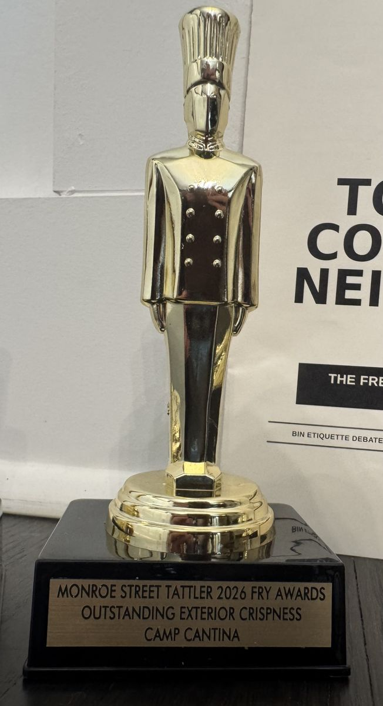
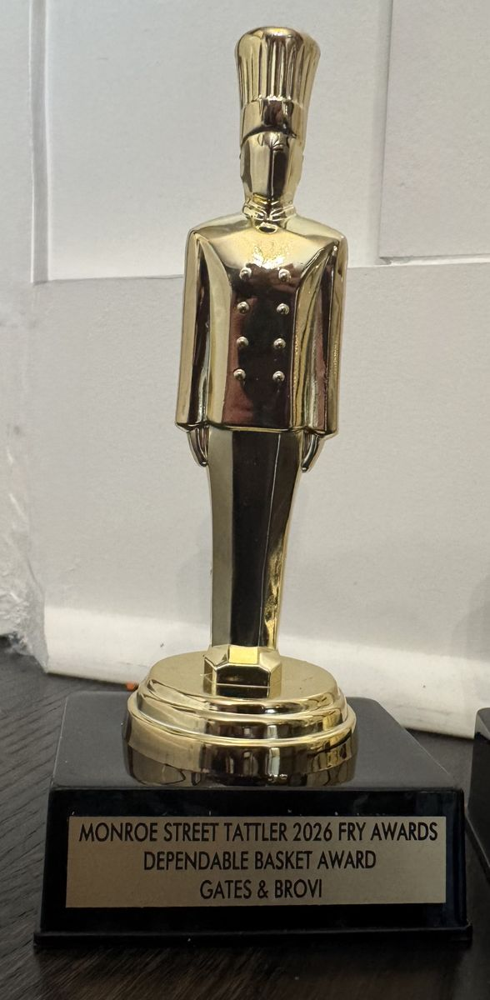
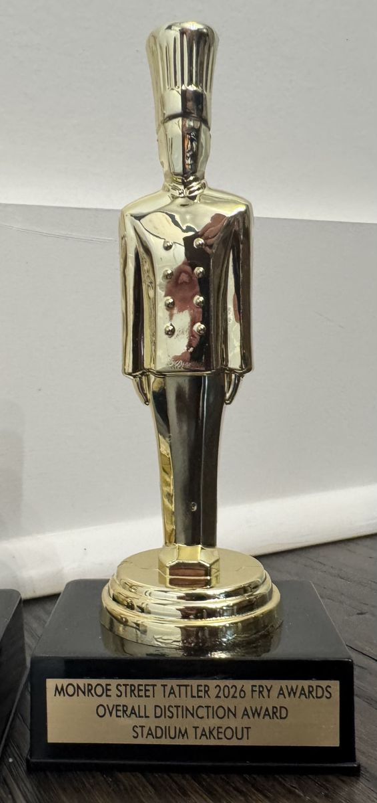
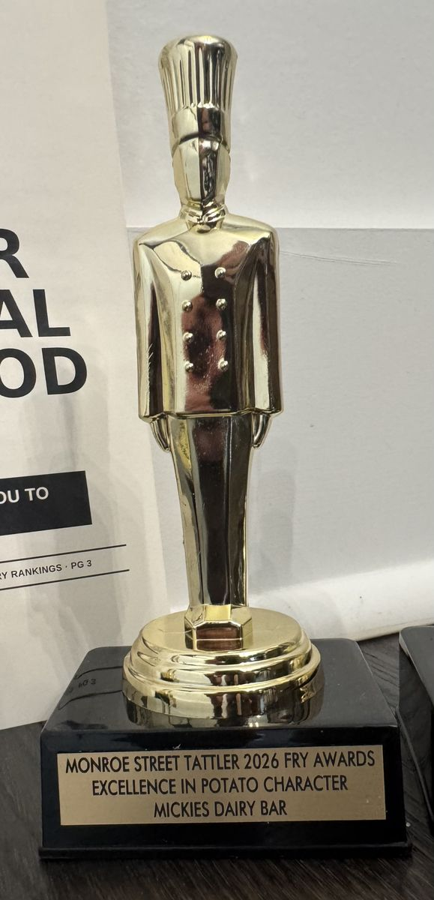
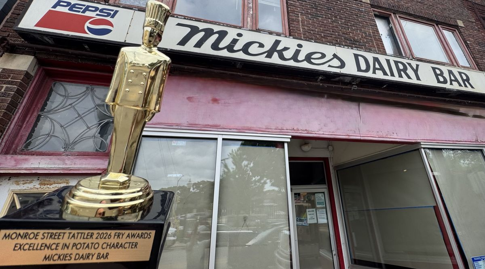

Special Culinary Investigation · Summer and September 2026
The Monroe Street French Fry Report
The idea is simple: celebrate neighborhood food, encourage a little friendly debate, and give french fries the kind of serious attention they absolutely do not require.

French fries are familiar, widely available, and exactly the sort of thing people can disagree about without needing to involve a zoning committee.
Methodology
To preserve the integrity of the evaluation process, the identities of the tasting panel remain confidential for reasons that should be immediately apparent.
Fries were eaten fresh, on site, with reasonable attention paid to fairness, timing, and fry temperature, thereby satisfying the standards of a controlled neighborhood french fry report. Samples were also subjected to day-after home air-fryer review, because the second life of a french fry should not be ignored.
Evaluation criteria included:
- Exterior Crispness
- Interior Texture
- Salt Distribution
- Potato Character
- Structural Integrity
- Condiment Compatibility
- Post-Reheat Performance
- Overall Distinction
- Commission Discretion1
“Some fries chased crispness. Some trusted the potato.”
Findings
Some fries chased crispness. Some trusted the potato. Some simply gave the neighborhood a dependable basket of fries. The evaluation revealed a surprisingly wide range of fry philosophies along Monroe Street.
Potato Character proved especially interesting. Mickie's Dairy Bar and Stadium Takeout both offered fries with a rustic, skin-on, homemade quality, though in different ways. Mickie's leaned lightly salted and slightly sweet, while Stadium Takeout brought seasoning, texture, and the kind of visible variation that makes a basket more fun to eat. One reviewer returned for “just one more” after evaluation had ended.
Exterior Crispness was another important area of distinction. Camp Cantina offered one of the strongest examples, with a textured crispy exterior that held up well even after cooling. It was a useful reminder that strong french fry programs are not limited to the places one might first expect.
Other establishments demonstrated the value of classic execution. Gates & Brovi stood out for consistency across multiple visits. Everly offered a clean, lightly salted, classic fry with good crispness. The Laurel Tavern served a crinkle-cut fry with the familiar ridges, soft interior, and condiment-friendly structure that define the style. Fya Syde brought a thin, familiar fry shape with pepper-forward seasoning. Pizza Extreme contributed a thicker, potato-forward fry, adding an unexpected pizza-place entry to the neighborhood roster.
Official Recognitions
After careful tasting, solemn deliberation, and the necessary application of Commission Discretion, the following recognitions are awarded:
- Excellence in Potato Character
Mickie's Dairy Bar - Outstanding Achievement in Exterior Crispness
Camp Cantina - Distinguished Service to the Dependable Basket
Gates & Brovi - Commissioner's Citation for Overall Distinction
Stadium Takeout
Residents wishing to contribute to the advancement of neighborhood fry knowledge are encouraged to pursue additional neighborhood sampling.
1. Commission Discretion is final and not publicly discussed.
Certified by the Monroe Street Tattler Culinary Commission · Ex Cibo Veritas
Fry Vote Shocker: Readers Issue Their Own Verdict
Since publishing the Monroe Street French Fry Report, shockwaves have continued to ripple through the neighborhood. The mailbag has not stopped. Readers wrote in with opinions, corrections, gravy-related grievances, and, more than anything else, love for one restaurant in particular.
One reader wrote in to say they had their engagement photos taken in front of The Laurel. No further explanation was offered, or needed.
The people have spoken, loudly and repeatedly, and the Tattler listens to volume above all else.

2026 Reader's Choice · The People's Fry Award
The Laurel Tavern
One reader felt so strongly about the honor that he sent us something longer than a letter. The Tattler is pleased to turn the page over to him.
A Reader's Ode to The Laurel · By Wm. Joseph
“Some places become part of your life without you quite realizing it at the time. For me, The Laurel is one of those places.”
The People's Fry Award: The Laurel Tavern →The Tattler Makes House Calls
Recipients, reportedly stunned, accept the Tattler's highest honors.





A Special Thank You
These individually engraved gold monuments to culinary excellence were made possible by an unsolicited reader contribution. The Tattler remains shaken by this extraordinary act of support. Readers are encouraged to look for these prestigious honors proudly displayed at winning establishments.
Camp Cantina has done something no business on this beat has ever done: responded to Tattler recognition with an actual, genuine giveaway.
Readers holding a first-run printed copy can redeem the coupon for one free small basket of fries during September. This is the first time in Tattler history a business has done this. The Commission does not expect it to happen again anytime soon.
This promotion ended in September 2026. The coupons are gone. You missed out.
The Investigation Is Still Open
Fry findings are accepted on a rolling basis. No credentials required.
Strong opinions, unresolved questions, and future matters requiring investigation are welcome to email MonroeStreetTattler@gmail.com.